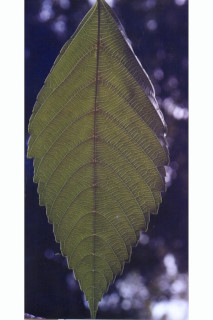
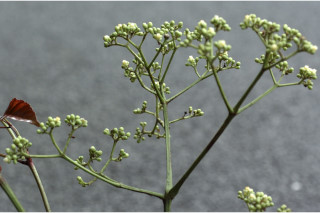
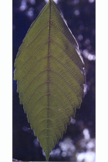
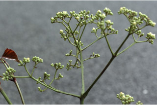

Large shrubs or small trees, up to 5 m tall.
ದೊಡ್ಡ ಪೊದೆಗಳು ಅಥವಾ 5 ಮೀ.ವರೆವಿಗೆ ಬೆಳೆಯುವ ಸಣ್ಣ ಮರಗಳು.
5 മീറ്റര് വരെ ഉയരമുളള, വലിയ കുറ്റിച്ചെടിയായോ ചെറുമരങ്ങളോ ആയി വളരുന്നു.
பெரிய குத்து செடி அல்லது சிறிய மரங்கள் 5 மீ. உயரம் வரை வளரக்கூடியது.
Stems several to single, often with stilt roots.
ಕಾಂಡಗಳು ಹಲವಾರಿನಿಂದ ಒಂಟಿಯಾಗಿರುತ್ತವೆ ಮತ್ತು ಹಲವು ಸಂಧರ್ಭಗಳಲ್ಲಿ ದಂಟು ಬೇರುಗಳ ಸಮೇತವಿರುತ್ತವೆ.
മിക്കവാറും താങ്ങുവേരുകളുളള, അനേകയെണ്ണം തൊട്ട് ഒറ്റയായി വരെ ഉണ്ടാകുന്ന തടി.
மத்திய தண்டு ஒன்று முதல் எண்ணற்றவை, ஸ்டில்ட் வேர்களுடையவை.
Young branchlets angled, glabrescent.
ಎಳೆಯ ಕಿರುಕೊಂಬೆಗಳು ಕೋನಯುಕ್ತವಾಗಿದ್ದು ಉದುರು ರೋಮ ಸಹಿತವಾಗಿರುತ್ತವೆ.
ഉപഅരോമിലമായ, കോണുളള, ഇളം ഉപശാഖകള്.
சிறிய நுனிக்கிளைகள் குறுக்குவெட்டுத் தோற்றத்தில் கோணங்களுடையவை மிக நுண்ணிய உரோமங்களுடையவை அல்லது அற்றது.
Leaves compound, bipinnate to tripinnate, alternate, spiral; rachis 10-20 cm, long; petiolules 0.5-2.5 cm; stipules purple, sheathing, obovate-oblong, glabrous; leaflets 6-21 x 3.5-7.5 cm, ovate to lanceolate, apex acuminate to caudate, base acute to rounded, margin serrate to dentate, glabrous, chartaceous, drying brown; midrib raised above; secondary_nerves 7-12 pairs; tertiary_nerves reticulo-percurrent.
ಎಲೆಗಳುಸಂಯುಕ್ತ ಮಾದರಿಯಲ್ಲಿದ್ದು ದ್ವಿಗರಿಯಿಂದ ತ್ರಿಗರಿ ರೂಪ ಹೊಂದಿದ್ದು ಪರ್ಯಾಯ ಮತ್ತು ಸುತ್ತು ಜೋಡನಾ ವ್ಯವಸ್ಥೆಯಲ್ಲಿರುತ್ತವೆ. ಎಲೆಗಳ ಅಕ್ಷದಿಂಡು 10 ರಿಂದ 20 ಸೆಂ.ಮೀ.ಉದ್ದವಿರುತ್ತದೆ;ಕಿರುತೊಟ್ಟುಗಳು 0.5 ರಿಂದ 2.5 ಸೆಂ.ಮೀ. ಉದ್ದವಿರುತ್ತವೆ;ಕಾವಿನೆಲೆಗಳು ಕೆನ್ನೀಲಿ ಬಣ್ಣದಲ್ಲಿದ್ದು ಒರೆ ರೂಪದ ಕೋಶವುಳ್ಳ -ದ್ದಾಗಿರುತ್ತವೆ ಮತ್ತು ಬುಗುರಿ-ಚತುರಸ್ರದ ಆಕಾರದಲ್ಲಿದ್ದು ರೋಮರಹಿತವಾಗಿರುತ್ತವೆ; ಕಿರುಎಲೆಗಳು 6-21X 3.5-7.5 ಸೆಂ.ಮೀ. ಗಾತ್ರ ಹೊಂದಿದ್ದು, ಅಂಡದಿಂದ ಭರ್ಜಿವರೆಗಿನ ಆಕಾರದಲ್ಲಿರುತ್ತವೆ; ಪತ್ರದ ತುದಿ ಕ್ರಮೇಣ ಚೂಪಾಗುವುದರಿಂದ ಬಾಲರೂಪಿವರೆಗಿನ ಮಾದರಿಯಲ್ಲಿದ್ದು,ಪತ್ರದ ಬುಡ ಚುಪಾಗಿರುವುದರಿಂದ ದುಂಡಾದ ರೀತಿಯ -ವರೆಗಿರುತ್ತದೆ; ಅಂಚು ಗರಗಸ ದಂತಿತದಿಂದ ದಂತಿತ ಮಾದರಿಯವರೆಗಿರುತ್ತದೆ; ಮೇಲ್ಮೈ ಕಾಗದವನ್ನೋಲುವ ಮಾದರಿಯಲ್ಲಿದ್ದು ರೋಮರಹಿತವಾಗಿರುತ್ತದೆ ಮತ್ತು ಒಣಗಿದಾಗ ಕಂದು ಬಣ್ಣ ಹೊಂದಿರುತ್ತದೆ;ಮಧ್ಯನಾಳ ಮೇಲ್ಭಾಗದಲ್ಲಿ ಉಬ್ಬಿರುತ್ತದೆ; ಎರಡನೇ ದರ್ಜೆಯ ನಾಳಗಳು ಅಂದಾಜು 7 -12 ಜೋಡಿಗಳಿರುತ್ತವೆ;ಮೂರನೇ ದರ್ಜೆಯ ನಾಳಗಳು ಜಾಲಬಂಧ ನಾಳ ವಿನ್ಯಾಸದಲ್ಲಿದ್ದು ಎಲೆದಿಂಡಿಗೆ ಅಡ್ಡವಾಗಿ ಕೂಡುತ್ತವೆ.
ദ്വിപിച്ഛകം തൊട്ട് ത്രിപിച്ഛകം വരെയായ ബഹുപത്രങ്ങള്, ഏകാന്തരക്രമത്തില്, സര്പ്പിളമായടുക്കിയതാണ്; മുഖ്യാക്ഷത്തിന് 10 സെ.മി തൊട്ട് 20 സെ.മീ വരെ നീളം പത്രകവൃന്തത്തിന് 0.5 സെ.മീ മുതല് 2.5 സെ.മി വരെ നീളം; ഊതനിറത്തിലുളള, അരോമിലമായ അനുപര്ണ്ണങ്ങള്, പോളയുളളതും അപഅണ്ഡാകാര - ആയതാകാരത്തിലുളളതുമാണ്; പത്രകങ്ങള്ക്ക് 6 സെ.മീ മുതല് 21 സെ.മീ വരെ നീളവും 3.5 സെ.മീ തൊട്ട് 7.5 സെ.മീ വരെ വീതിയും, ആകൃതി അണ്ഡാകാരം തൊട്ട് കുന്താകാരം വരെയുമാണ്, പത്രാഗ്രം ദീര്ഘം തൊട്ട് വാലോട് കൂടിയതുവരെയാണ്, പത്രാധാരം നിശിതം തൊട്ട് വൃത്താകാരം വരെയാണ്, അരികുകള് ദന്തുരം തൊട്ട് ദന്തിതം വരെയാണ്, അരോമിലം, കടലാസ്പോലത്തെ പ്രകൃതം, ഉണങ്ങുമ്പോള് തവിട്ട് നിറമാകുന്നു; മുഖ്യസിര മുകളില് ഉയര്ന്നതാണ്; 7 മുതല് 12 വരെ ജോഡി ദ്വിതീയ ഞരമ്പുകള്; ജാലിത പെര്കറന്റ് വിധത്തിലുളള ത്രിതീയ ഞരമ്പുകള്.
இலைகள் கூட்டிலைகள், இருமுறை கிளைத்த சிறகுவடிவக்கூட்டிலைகள் முதல் மூன்றுமுறை கிளைத்த சிறகுவடிவக்கூட்டிலைகள், மாற்றுடுக்கமானவை, சுழல் போல் அமைந்தவை; மத்தியகாம்பு (ராக்கிஸ்) 10-20 செ.மீ. நீளமானது; சிற்றலைகளின் காம்பு 0.5-2.5 செ.மீ. நீளமானது; இலையடிச்செதில் பர்புள் நிறமானது, உறை போன்றது. தலைகீழ் முட்டை-நீள்சதுர வடிவானது, உரோமங்களற்றது; சிற்றிலைகள் 6-21 X 3.5-7.5 செ.மீ., முட்டை முதல் ஈட்டி வடிவானது, அலகின் நுனி அதிக்கூரியது முதல் வால் போன்றது, அலகின் விளிம்பு நுனி நோக்கிய ரம்ப பற்கள் முதல் விளிம்பு நோக்கிய பற்களுடையது, உரோமங்களற்றது, சார்ட்டேசியஸ், உலரும் போது ப்ரவுன் நிறமடைகிறது; மையநரம்பு மேற்பரப்பில் அலகின் பரப்பைவிட உயர்ந்தது; இரண்டாம் நிலை நரம்புகள் 7-12 ஜோடிகள்; மூன்றாம் நிலை நரம்புகள் வலைப்பின்னல்-பெர்க்கரண்ட்.
Inflorescence corymbose cymes; calyx green, petals cream.
ಪುಷ್ಪಮಂಜರಿ ನೀಳಛತ್ರ ಮಧ್ಯಾರಂಭಿ ರೀತಿಯವು;ಪುಷ್ಪಪಾತ್ರೆ ಹಸಿರಾಗಿದ್ದು ಪುಷ್ಪದಳ ಕೆನೆ ಬಣ್ಣ ಹೊಂದಿರುತ್ತದೆ.
പച്ചനിറത്തിലുളള ബാഹ്യദളങ്ങളും, ക്രീംനിറത്തിലുളള ദളങ്ങളുമുളള പൂക്കള്, കോറിബോസ് സൈം പൂങ്കുലകളിലുണ്ടാകുന്നു.
மஞ்சரி கோரியம்ப் சைம்; புல்லி இதழ் பச்சை நிறமானது, அல்லி இதழ்கள் கிரீம் நிறமானது,
Berry, depressed, globose, ca.0.7 cm across, purple black; seeds 4-6.
ಬೆರ್ರಿಗಳು ಅದುಮಿದ ಹಾಗಿರುವ ಗೋಳಾಕಾರದಲ್ಲಿದ್ದು ಅಂದಾಜು 0.7 ಸೆಂ.ಮೀ. ಅಡ್ಡಗಳತೆ ಹೊಂದಿರುತ್ತವೆ ಮತ್ತು ಕೆನ್ನೀಲಿ ಮಿಶ್ರಿತ ಕಪ್ಪು ಬಣ್ಣ ಹೊಂದಿದ್ದು 4 ರಿಂದ 6 ಬೀಜಗಳನ್ನೊಳ -ಗೊಂಡಿರುತ್ತವೆ.
4 മുതല് 6 വരെ വിത്തുളള, ഊതകലര്ന്ന കറുത്ത നിറത്തിലുളള കായ, ഏതാണ്ട് 0.7 സെ.മീ കുറുകേയുളള, കുഴിവുളള, ഗോളാകാര ബെറിയാണ്.
முழுச்சதைகனி (பெர்ரி), சிறிது அழுந்திய கோளவடிவானது, 0.7 செ.மீ. குறுக்களவுடையது, பர்புள்-கருப்பு நிறமானது; விதைகள் 4-6 கொண்டது.
 


